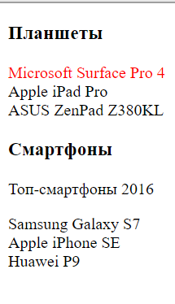
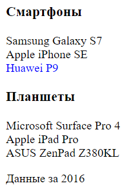
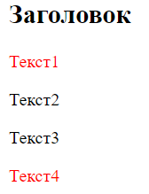
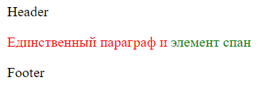
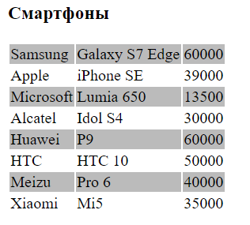
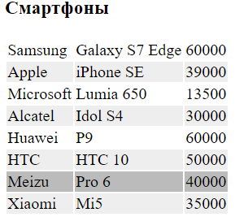

Псевдоклассы дочерних элементов
Особую группу псевдоклассов образуют псевдоклассы, которые позволяют выбрать определенные дочерние элементы:
- :first-child: представляет элемент, который является первым дочерним элементом
- :last-child: представляет элемент, который является последним дочерним элементом
- :only-child: представляет элемент, который является единственным дочерним элементом в каком-нибудь контейнере
- :only-of-type: выбирает элемент, который является единственным элементом определенного типа (тега) в каком-нибудь контейнере
- :nth-child(n): представляет дочерний элемент, который имеет определенный номер n, например, второй дочерний элемент
- :nth-last-child(n): представляет дочерний элемент, который имеет определенный номер n, начиная с конца
- :nth-of-type(n): выбирает дочерний элемент определенного типа, который имеет определенный номер
- :nth-last-of-type(n): выбирает дочерний элемент определенного типа, который имеет определенный номер, начиная с конца
Псевдокласс first-child
Используем псевдокласс first-child для выбора первых ссылок в блоках:
<!DOCTYPE html>
<html>
<head>
<meta charset="utf-8">
<title>Селекторы в CSS3</title>
<style>
a:first-child{
color: red;
}
</style>
</head>
<body>
<h3>Планшеты</h3>
<div>
<a>Microsoft Surface Pro 4</a><br/>
<a>Apple iPad Pro</a><br/>
<a>ASUS ZenPad Z380KL</a>
</div>
<h3>Смартфоны</h3>
<div>
<p>Топ-смартфоны 2016</p>
<a>Samsung Galaxy S7</a><br/>
<a>Apple iPhone SE</a><br/>
<a>Huawei P9</a>
</div>
</body>
</html>
Стиль по селектору a:first-child применяется к ссылке, если она является первым дочерним элементом любого элемента.
В первом блоке элемент ссылки является первым дочерним элементом, поэтому к нему применяется определенный стиль.
А во втором блоке первым элементом является параграф, поэтому ни к одной ссылке не применяется стиль.
Псевдокласс last-child
Используем псевдокласс last-child:
<!DOCTYPE html>
<html>
<head>
<meta charset="utf-8">
<title>Селекторы в CSS3</title>
<style>
a:last-child{
color: blue;
}
</style>
</head>
<body>
<h3>Смартфоны</h3>
<div>
<a>Samsung Galaxy S7</a><br/>
<a>Apple iPhone SE</a><br/>
<a>Huawei P9</a>
</div>
<h3>Планшеты</h3>
<div>
<a>Microsoft Surface Pro 4</a><br/>
<a>Apple iPad Pro</a><br/>
<a>ASUS ZenPad Z380KL</a>
<p>Данные за 2016</p>
</div>
</body>
</html>

Селектор a:last-child определяет стиль для ссылок, которые являются последними дочерними элементами.
В первом блоке как раз последним дочерним элементом является ссылка. А вот во втором последним дочерним элементом является параграф, поэтому во втором блоке стиль не применяется ни к одной из ссылок.
Селектор only-child
Селектор :only-child выбирает элементы, которые являются единственными дочерними элементами в контейнерах:
<!DOCTYPE html>
<html>
<head>
<meta charset="utf-8">
<title>Селекторы в CSS3</title>
<style>
p:only-child{
color:red;
}
</style>
</head>
<body>
<h2>Заголовок</h2>
<div>
<p>Текст1</p>
</div>
<div>
<p>Текст2</p>
<p>Текст3</p>
</div>
<div>
<p>Текст4</p>
</div>
</body>
</html>

Селектор only-child
Псевдокласс only-of-type выбирает элемент, который является единственным элементом определенного типа в контейнере. Например, единственный элемент div, при этом элементов других типов в этом же контейнере может быть сколько угодно.
<!DOCTYPE html>
<html>
<head>
<meta charset="utf-8">
<title>Селекторы в CSS3</title>
<style>
span:only-of-type{
color: green; /* зеленый цвет */
}
p:only-of-type{
color: red; /* красный цвет */
}
div:only-of-type{
color: blue; /* синий цвет */
}
</style>
</head>
<body>
<div>
Header
</div>
<p>Единственный параграф и <span> элемент спан</span></p>
<div>
Footer
</div>
</body>
</html>
Хотя для элементов div определен стиль, он не будет применяться, так как в контейнере body находится два элемента div, а не один. Зато в body есть только один элемент p, поэтому он получит стилизацию. И также в контейнере p есть только один элемент span, поэтому он также будет стилизован.
Псевдокласс nth-child
Псевдокласс nth-child позволяет стилизовать каждый второй, третий элемент, только четные или только нечетные элементы и т.д.
<!DOCTYPE html>
<html>
<head>
<meta charset="utf-8">
<title>Селекторы в CSS3</title>
<style>
tr:nth-child(odd) { background-color: #bbb; }
tr:nth-child(even) { background-color: #fff; }
</style>
</head>
<body>
<h3>Смартфоны</h3>
<table>
<tr><td>Samsung</td><td>Galaxy S7 Edge</td><td>60000</td></tr>>
<tr><td>Apple</td><td>iPhone SE</td><td>39000</td></tr>
<tr><td>Microsoft</td><td>Lumia 650</td><td>13500</td></tr>
<tr><td>Alcatel</td><td>Idol S4</td><td>30000</td></tr>
<tr><td>Huawei</td><td>P9</td><td>60000</td></tr>
<tr><td>HTC</td><td>HTC 10</td><td>50000</td></tr>
<tr><td>Meizu</td><td>Pro 6</td><td>40000</td></tr>
<tr><td>Xiaomi</td><td>Mi5</td><td>35000</td></tr>
</table>
</body>
</html>

Чтобы определить стиль для нечетных элементов, в селектор передается значение "odd":
tr:nth-child(odd){}
Для стилизации четных элементов в селектор передается значение "even":
tr:nth-child(even){}
Также в этот селектор мы можем передать номер стилизуемого элемента:
tr:nth-child(3) { background-color: #bbb; }
В данном случае стилизуется третья строка.
Еще одну возможность представляет использование заменителя для номера, который выражается буквой n
tr:nth-child(2n+1) { background-color: #bbb; }
Здесь стиль применяется к каждой второй нечетной строке.
Число перед n (в данном случае 2) представляет тот дочерний элемент, который будет выделен следующим. Число, которое идет после знака плюс, показывают, с какого элемента нужно начинать выделение, то есть, +1 означает, что нужно начинать с первого дочернего элемента.
Таким образом, в данном случае выделение начинается с 1-го элемента, а следующим выделяется 2 * 1 + 1 = 3-й элемент, далее 2 * 2 + 1 = 5-й элемент и так далее.
К примеру, если мы хотим выделить каждый третий элемент, начиная со второго, то мы могли бы написать:
tr:nth-child(3n+2) { background-color: #bbb; }
Псевдокласс :nth-last-child по сути предоставляет ту же самую функциональность, только отсчет элементов идет не с начала, а с конца:
tr:nth-last-child(2) {
background-color: #bbb; /* 2 строка с конца, то есть предпоследняя */
}
tr:nth-last-child(2n+1) {
background-color: #eee; /* нечетные строки, начиная с конца */
}

Псевдокласс nth-of-type
Псевдокласс :nth-of-type позволяет выбрать дочерний элемент определенного типа по определенному номеру:
tr:nth-of-type(2) {
background-color: #bbb;
}
Аналогично работает псевдокласс nth-last-of-type, только теперь отсчет элементов идет с конца:
tr:nth-last-of-type(2n) {
background-color: #bbb;
}